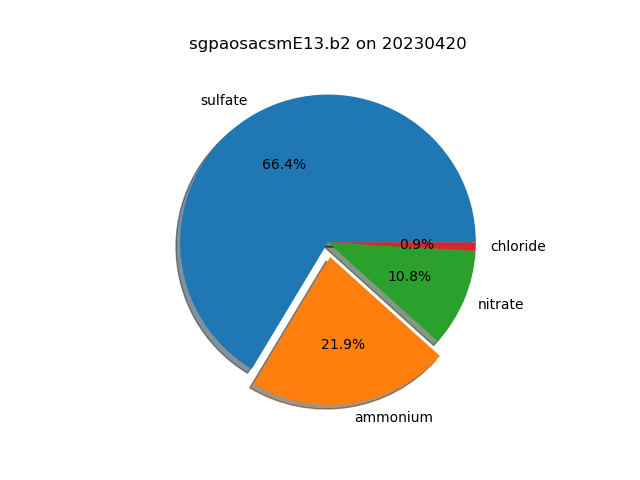

Note
Go to the end to download the full example code.
Calculate and View Aerosol Percentages¶
Calculate the percentages of different aerosols in a Aerosol Chemical Speciation (AOS) monitor dataset and view the percentages in a pie chart.
Written: Zach Sherman
KeysView(Data variables:
base_time datetime64[ns] 8B 2023-04-20
time_offset (time) datetime64[ns] 408B 2023-04-20T00:01...
time_bounds (time, bound) object 816B dask.array<chunksize=(51, 2), meta=np.ndarray>
total_organics (time) float32 204B dask.array<chunksize=(51,), meta=np.ndarray>
qc_total_organics (time) int32 204B dask.array<chunksize=(51,), meta=np.ndarray>
sulfate (time) float32 204B dask.array<chunksize=(51,), meta=np.ndarray>
qc_sulfate (time) int32 204B dask.array<chunksize=(51,), meta=np.ndarray>
ammonium (time) float32 204B dask.array<chunksize=(51,), meta=np.ndarray>
qc_ammonium (time) int32 204B dask.array<chunksize=(51,), meta=np.ndarray>
nitrate (time) float32 204B dask.array<chunksize=(51,), meta=np.ndarray>
qc_nitrate (time) int32 204B dask.array<chunksize=(51,), meta=np.ndarray>
chloride (time) float32 204B dask.array<chunksize=(51,), meta=np.ndarray>
qc_chloride (time) int32 204B dask.array<chunksize=(51,), meta=np.ndarray>
airbeam_normalization_factor (time) float32 204B dask.array<chunksize=(51,), meta=np.ndarray>
inlet_pressure (time) float32 204B dask.array<chunksize=(51,), meta=np.ndarray>
lat float32 4B ...
lon float32 4B ...
alt float32 4B ...)
from arm_test_data import DATASETS
import matplotlib.pyplot as plt
import act
from act.io.arm import read_arm_netcdf
# Read an ARM AOS dataset
filename = DATASETS.fetch('sgpaosacsmE13.b2.20230420.000109.nc')
ds = read_arm_netcdf(filename)
# Let us print out the fields in the dataset and see what it contains.
print(ds.data_vars.keys())
# Knowing what fields the dataset contains, let's create a list of fields
# to use in the plot.
fields = ['sulfate', 'ammonium', 'nitrate', 'chloride']
# We also want to provide some keyword arguments to avoid invalid data such
# as negative values.
threshold = 0.0
fill_value = 0.0
# Create a DistributionDisplay object to compare fields
display = act.plotting.DistributionDisplay(ds)
# We can set one of the slices to explode and give it a nice shadow.
explode = (0, 0.1, 0, 0)
shadow = True
# Create a pie chart using the fields list. The percentages of the
# fields will be calculated using act.utils.calculate_percentages.
display.plot_pie_chart(
fields,
threshold=threshold,
fill_value=fill_value,
explode=explode,
shadow=True,
)
plt.show()
Total running time of the script: (0 minutes 0.080 seconds)